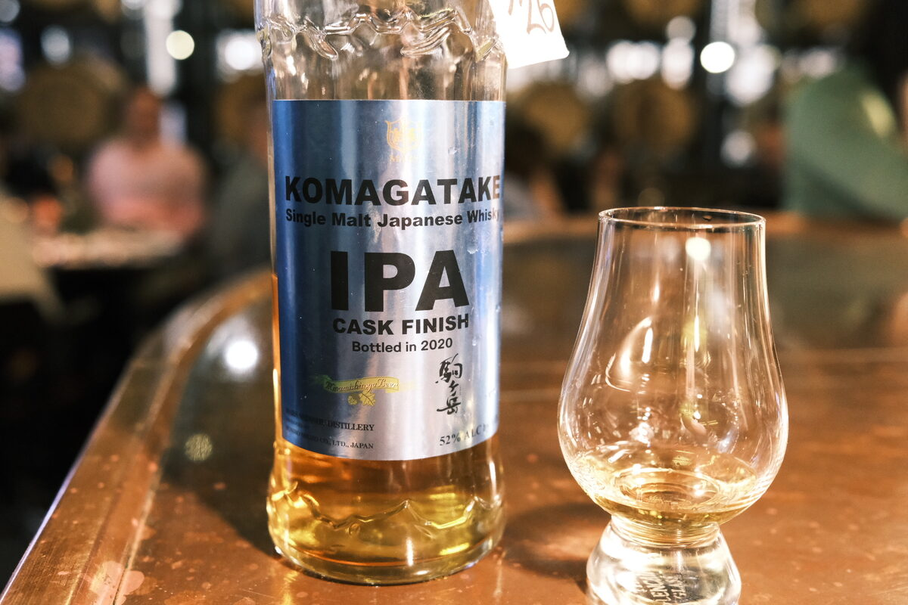

Shinshu "Komatagake IPA Cask Finish" 3 years 52% (IPA finish, bottled 2020)
Peated to 3.5ppm. Finished in an IPA cask from Minami Shinshu Brewery. Apparently on the distillery’s grounds – do they make the wash, too?
Colour Gold.
Nose Tropical fruit: banana, pineapple. Banana lollies and caramel. Malt, lemons and limes. Orange sherbet. Sorbet, too. With water, sweeter, more oranges, perhaps some cloves.
Palate Malty, orange and lemon peels. A little bitter (perhaps the hops?), and then icing sugar sweetness. Banana lollies and fruit jellies. With water, more fruit, oak spices. Milky mouthfeel.
Finish Malty, milky, tropical fruits, overripe bananas. Brown sugar. With water, more banana. Almost smoothie at this point. Vanilla. Oak. A bit stemmy? Hops?
Comments Tropical and other assorted fruits, a little bitter… very IPA, I suppose. 85/100.

Posted by Dominic on 15 Jun 2021